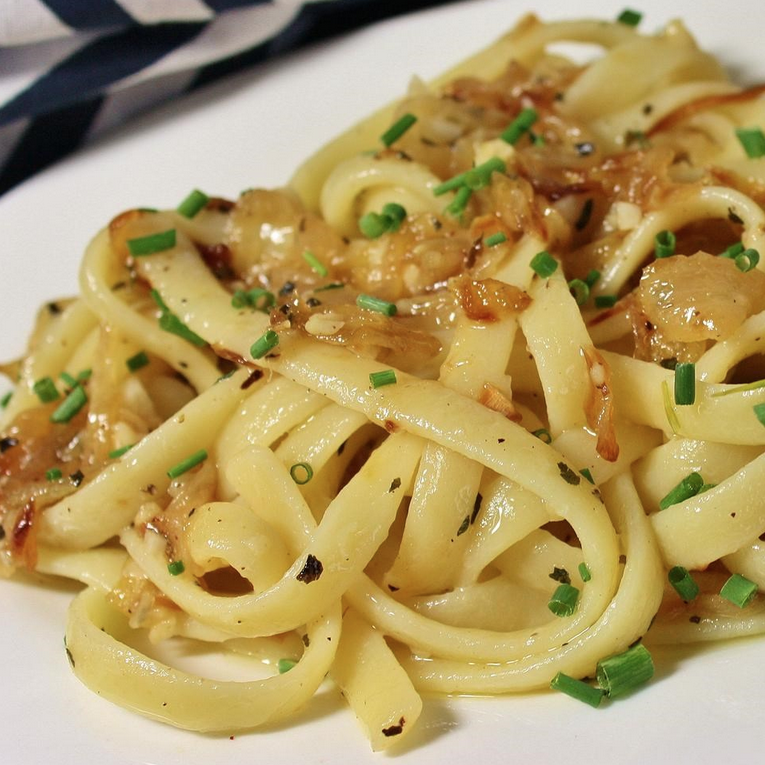

Onion Pasta

Ingredients
Serves 1 person
- 2 tablespoons of olive oil
- 2 tablespoons of butter
- 1 onions thinly sliced
- 1/2 teaspoon of dried basil
- 1 pinch of ground pepper
- 4 table spoons of water
- 1 teaspoon of chicken bouillon (optional)
- 100g of linguine
Intructions
- In a large skillet place oil, butter and onions and cook until golden brown.
- Add basil, pepper, water and bouillon and cook on low heat for 10 minutes.
- Add onion mixture to cooked pasta, sprinkle with cheese, toss and serve.
Total prep time : 15 minutes